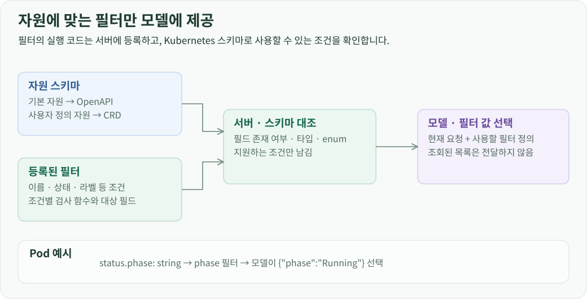
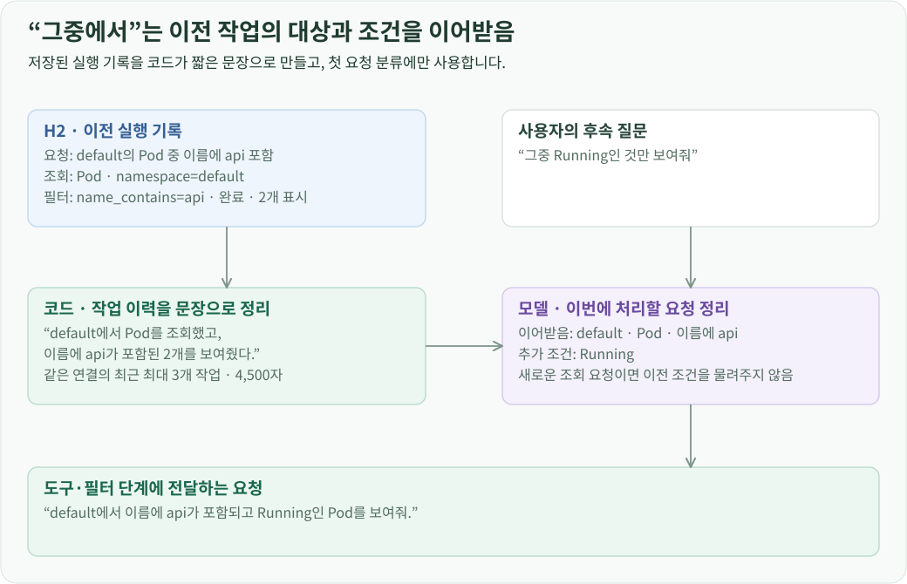
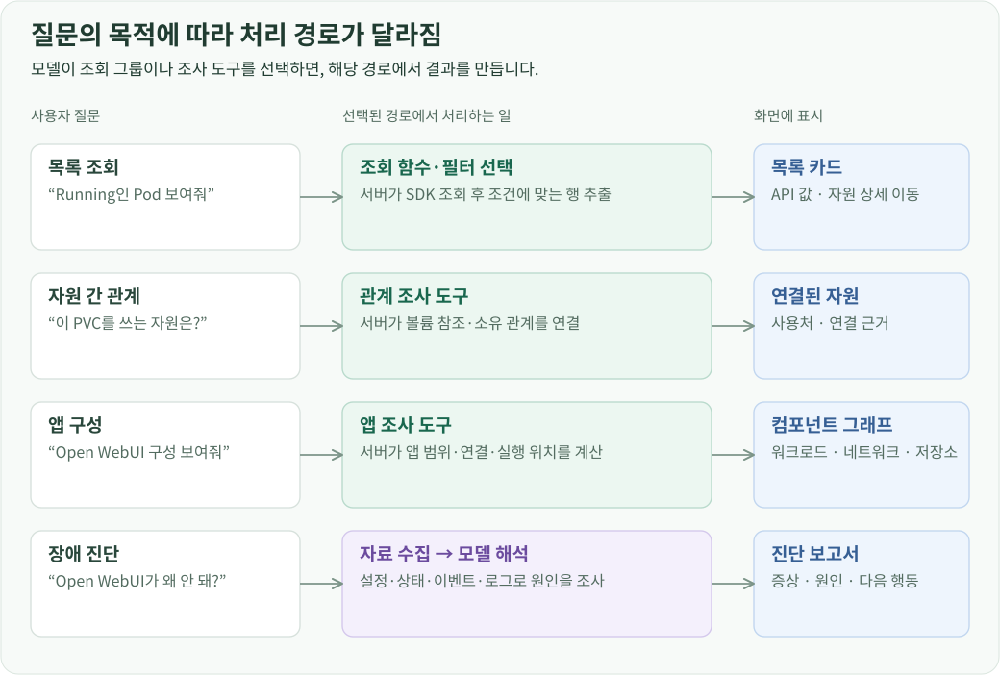
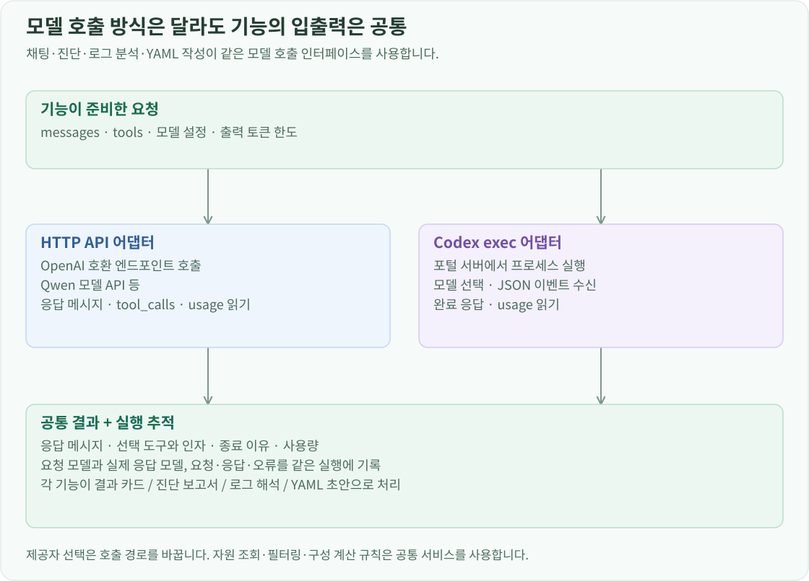

프로젝트 소개 · CloudLens 개발 · 전체 문서
개요
목록 조회에서 모델은 사용자의 문장을 조회 함수와 인자로 변환합니다. 서버는 그 함수로 인프라 API를 호출하고 필터를 적용한 뒤 결과 카드를 만듭니다. 조회 데이터를 모델의 문장으로 다시 생성하는 단계를 없애, API가 반환한 자원과 값을 그대로 화면에 사용할 수 있게 했습니다.
요청을 그룹·조회·필터로 나누기
“Running인 Pod 보여줘”라는 요청에서는 조회할 자원과 범위, 적용할 상태 조건을 정해야 합니다. 이 결정을 한 번에 맡기면 모델이 자원을 고르는 동안 다른 플랫폼의 도구와 필터까지 읽어야 합니다. 그래서 먼저 조회 그룹을 고르고, 선택한 그룹 안에서 함수와 인자를 정한 뒤, 해당 자원에 쓸 수 있는 필터를 고르게 했습니다.

- 그룹 선택: 현재 질문, 짧은 작업 이력, 그룹 설명으로 조회 분야와 담당 요청을 정합니다.
- 조회 함수 선택: 선택한 그룹의 도구 정의만 전달합니다. 모델이 Pod 조회 함수와 Namespace를 정하면 서버가 인자를 검증하고 Kubernetes SDK를 호출합니다.
- 필터 선택: Pod에 쓸 수 있는 필터 정의를 전달합니다. 모델이
phase=Running을 선택하면 서버가 조회 결과에 적용하고 목록 카드를 만듭니다.
여러 자원을 함께 요청하면 독립적인 그룹의 도구 선택과 조회를 최대 4개씩 병렬 처리합니다. 모델 호출마다 해당 단계의 요청과 도구만 넣어, 다른 플랫폼의 도구나 이전 단계의 기록을 반복해서 읽지 않도록 했습니다.
자원 스키마로 필터 후보를 정하기
도구 정의에는 함수의 용도와 인자 타입, 필수 값을 적습니다. 그룹을 고를 때는 각 그룹의 설명을, 조회 함수를 고를 때는 그 그룹에 속한 도구의 상세 설명과 JSON Schema를 제공합니다. Kubernetes 사용자 정의 자원은 CRD에 적힌 용도 설명도 그룹·도구 설명에 반영합니다.
필터도 자원에 맞춰 제공합니다. 서버에는 이름 일치·부분 일치, 상태, 라벨 등의 조건과 검사 함수가 등록되어 있습니다. Kubernetes 기본 자원은 OpenAPI, 사용자 정의 자원은 CRD 스키마와 대조해 실제 필드와 타입이 맞는 필터만 남깁니다.

예를 들어 Pod의 phase는 문자열 단계 값이고, ready는 Ready condition을 확인하는 참·거짓 조건입니다. 각 필터의 설명과 타입을 도구 정의에 넣어 모델이 구분할 수 있게 합니다. OpenStack도 Nova VM 상태, Cinder 볼륨 상태처럼 서비스별 필터 정의를 사용합니다.
조회 결과는 서버에서 필터링하고 표시
필터를 고르는 모델에는 조회된 행을 보내지 않습니다. 담당 요청, 자원 종류, 조회 범위와 필터 정의만 전달합니다. SDK에서 받은 원본 객체와 화면용 행 데이터는 서버에 남겨 둡니다.
모델이 반환한 조건은 스키마로 검증한 뒤 서버의 필터 함수로 실행합니다. 여러 조건은 AND로 적용하고, 조건이 비어 있으면 전체 결과를 표시합니다. 지원하지 못한 조건은 별도 항목으로 반환합니다. 적용 조건과 처리 전후 개수, 표시 결과도 실행 기록에 저장합니다.
남은 행은 공통 결과 카드에 바로 넣습니다. 카드에는 연결·조회 범위·적용 조건과 자원 식별자가 들어가므로, 프론트엔드는 표를 그린 뒤 자원 이름을 누르면 해당 상세 화면을 열 수 있습니다. 목록을 설명하는 답변을 만들기 위해 모델을 다시 호출하지 않습니다.
이전 작업을 후속 질문에 연결
“그중 Running인 것만”이라는 질문을 처리하려면 직전에 어떤 자원을 어떤 조건으로 조회했는지 알아야 합니다. 서버는 H2에 저장된 질문, 도구 인자, 필터, 완료 상태와 표시 개수를 읽어 짧은 작업 이력으로 만듭니다. 이 문장은 별도 모델 호출 없이 코드로 구성합니다.

현재 선택한 연결과 같은 프로필의 최근 작업을 최대 3개, 전체 4,500자 안에서 전달합니다. 이력은 첫 요청 분류에만 쓰고, 이후 도구·필터 단계에는 정리된 담당 요청만 넘깁니다. 따라서 과거 목록이 길어져도 그 행 데이터가 다음 모델 입력에 계속 쌓이지 않습니다.
목록·관계·앱 조사 경로
자원을 나열하는 요청과 자원 사이의 연결을 찾는 요청은 처리 경로가 다릅니다. 모델은 첫 단계에서 목적에 맞는 그룹이나 앱 조사 도구를 선택합니다.

“이 PVC를 사용하는 자원”은 Pod의 볼륨 참조와 소유 컨트롤러를 연결하는 관계 도구로 처리합니다. 앱 이름이나 접속 주소에서 시작하면 앱 조사 도구가 대상을 찾고 구성·연결·실행 위치를 계산합니다. 중간에 만난 Service나 Pod마다 모델이 새 계획을 만드는 대신, 관계 서비스가 참조를 따라 하나의 결과를 반환합니다.
장애 진단은 앱 자료를 수집한 다음 모델 해석으로 이어집니다. 목록과 구성은 서버가 계산한 카드로 표시하고, 진단은 수집한 근거를 바탕으로 증상·원인·다음 행동을 연결합니다. 모델에 전달하는 자료와 진단 절차는 애플리케이션 원인 진단에서 확인할 수 있습니다. 진단 검증에서는 같은 자료를 Qwen과 Sol에 전달해 결과를 비교했습니다.
모델 제공자와 응답 전달
API URL로 호출하는 제공자와 서버에서 Codex exec를 실행하는 제공자를 공통 모델 인터페이스로 연결했습니다. 호출부는 messages, 도구 정의, 출력 한도와 도구 선택 조건을 전달하고, 제공자 어댑터는 이를 해당 실행 방식에 맞춰 변환합니다. 응답은 메시지·도구 호출·종료 이유·사용량으로 정리합니다.

모델 설정은 사용자 범위로 저장합니다. 제공자와 모델을 선택하고 입력·출력 한도를 설정하면 채팅, 진단, 로그 분석과 YAML 초안 작성이 같은 설정을 사용합니다. 모델 메타데이터에서 한도를 확인하고 설정값으로 보완하며, API 키는 서버 메모리에 보관합니다.

채팅 화면은 /api/chat의 SSE에서 진행 상태, 조회 근거와 최종 결과를 받습니다. 서버는 모델 호출, 도구 실행, 필터 적용과 결과 생성 단계를 같은 실행 ID 아래에 기록합니다.